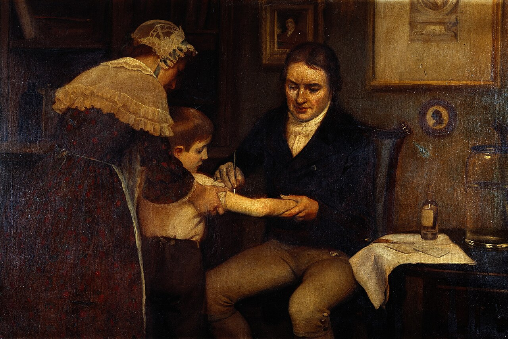

免疫学的应用
本期导读
疫苗 · 器官移植 · 免疫诊断

视频原话 · 导读3 句
- 同学们好！这节课梳理人教版选择性必修一第四章第四节——免疫学的应用。7.5s
- 这一节联系生活实际，高考常考疫苗的原理、免疫预防与免疫治疗的区别，以及抗原检测和抗体检测。9.9s
- 我们按五个考点梳理，每个考点都讲清楚怎么考、怎么做。5.4s
疫苗的原理01#
疫苗：灭活的或减毒的病原体制成的生物制品
保留抗原性，但不使人患病
- 接种疫苗
- →抗体 + 记忆细胞
- 病原体侵入
- →记忆细胞增殖、分化
- →二次免疫
多次接种 → 产生更多的抗体和记忆细胞，增强免疫效果
易错
疫苗相当于抗原，不是抗体；接种间隔太短，前次的抗体会与疫苗结合，影响效果
视频原话5 句
- 考点一，疫苗。疫苗通常是用灭活的或减毒的病原体制成的生物制品。图中是1796年，琴纳为男孩接种牛痘，预防天花。12.7s
- 疫苗保留了病原体的抗原性，但不会使人患病。接种后，人体产生抗体和记忆细胞。8.3s
- 当真正的病原体侵入时，记忆细胞迅速增殖、分化，发生二次免疫，从而起到预防作用。8.5s
- 为什么有的疫苗要多次接种？因为再次接种能刺激机体产生更多的抗体和记忆细胞，增强免疫效果。9.7s
- 易错：疫苗相当于抗原，不是抗体；两次接种的间隔太短，前一次产生的抗体会与疫苗结合，反而影响效果。10.6s
免疫预防与免疫治疗02#
| 比较项目 | 免疫预防 | 免疫治疗 |
|---|---|---|
| 时间 | 患病前 | 患病后 |
| 注射 | 疫苗（抗原） | 抗体、细胞因子；或免疫抑制剂 |
| 机体 | 主动产生抗体和记忆细胞 | 直接获得抗体，不产生记忆细胞 |
| 特点 | 见效慢，作用持久 | 见效快，维持时间短 |
例：被毒蛇咬伤 → 注射抗蛇毒血清（含抗体）
解题方法
注射抗原 → 预防、慢而久；注射抗体 → 快而短；被狂犬咬伤：疫苗和抗体都要注射
视频原话5 句
- 考点二，免疫预防与免疫治疗。3.5s
- 免疫预防是在患病前接种疫苗，让机体主动产生抗体和记忆细胞，作用持久。7.6s
- 免疫治疗是在患病后，输入抗体、细胞因子等，增强机体的免疫功能；也可以使用免疫抑制剂，降低免疫功能。10.3s
- 比如被毒蛇咬伤后注射抗蛇毒血清，其中的抗体能立即起作用，但会逐渐被分解，维持时间短，也不产生记忆细胞。11.2s
- 解题方法：注射的是抗原，也就是疫苗，属于预防，见效慢、持续久；注射的是抗体，见效快、持续短。被狂犬咬伤后，要两种都注射。13.8s
器官移植03#
最大问题：免疫排斥
细胞表面的“身份证”：组织相容性抗原
= 人类白细胞抗原（HLA），每个人各不相同
= 人类白细胞抗原（HLA），每个人各不相同
HLA差别大 → 受者的细胞毒性T细胞攻击移植器官
成败取决于HLA是否一致或相近；术后长期用免疫抑制剂
易错
免疫抑制剂使病人免疫力降低、易感染；用患者自身干细胞培养的器官可避免排斥
视频原话5 句
- 考点三，器官移植。器官移植面临的最大问题是免疫排斥。6.4s
- 每个人的细胞表面都带有一组与别人不同的蛋白质，叫做组织相容性抗原，也叫人类白细胞抗原，简称HLA。10.5s
- 如果供者与受者的HLA差别很大，受者的免疫系统，主要是细胞毒性T细胞，就会攻击移植的器官。9.6s
- 所以器官移植的成败，主要取决于供者与受者的HLA是否一致或相近。术后还要长期使用免疫抑制剂，提高成活率。12.0s
- 易错：使用免疫抑制剂后，病人免疫力降低，容易感染。用患者自己的干细胞培养出组织、器官进行移植，可以避免免疫排斥。12.3s
三种检测的区别04#
| 检测方法 | 检测对象 | 所用材料或原理 | 特点 |
|---|---|---|---|
| 核酸检测 | 病毒的遗传物质 | PCR扩增等 | 灵敏、准确，可早期诊断 |
| 抗原检测 | 病毒的蛋白质 | 已知的抗体 | 快速、简便 |
| 抗体检测 | 血液中的抗体 | 已知的抗原 | 感染一段时间后才能检出 |
易错
抗原检测用抗体，抗体检测用抗原；抗体检测阳性不一定正在感染（可能曾感染或接种过疫苗）
视频原话5 句
- 考点四，免疫诊断。以病毒感染为例，常用三种检测方法。6.4s
- 核酸检测：检测病毒的遗传物质，比如用PCR技术扩增，灵敏、准确，可用于早期诊断。9.3s
- 抗原检测：利用抗原和抗体特异性结合的原理，用已知的抗体去检测样本中的病毒蛋白质，速度快、操作简便。10.8s
- 抗体检测：用已知的抗原去检测血液中的抗体。抗体要在感染后一段时间才产生，阳性可能是正在或曾经感染，也可能是接种过疫苗。13.2s
- 易错：抗原检测用的是抗体，抗体检测用的是抗原，不要弄反；抗体检测阳性，不一定正在感染。9.6s
免疫学实验题05#
生理状况相同的同种小鼠，随机分为两组
实验组
- 接种疫苗
- →注射同种病原体
- →正常存活
对照组
- 等量生理盐水
- →注射同种病原体
- →患病或死亡
血清实验
- 已免疫小鼠的血清
- →注射给未免疫小鼠
- →再注射病原体，看是否存活
结论：疫苗使小鼠获得对该病原体的免疫力
解题方法
自变量：是否接种疫苗；对照组注射等量生理盐水；因变量：存活率或抗体含量
视频原话5 句
- 考点五，免疫学的实验题。最常见的是验证疫苗的效果。5.9s
- 选取生理状况相同的小鼠，分成两组。实验组接种疫苗；对照组注射等量的生理盐水。一段时间后，两组都注射同种病原体。12.9s
- 结果：实验组小鼠正常存活，对照组小鼠患病甚至死亡，说明疫苗能使小鼠获得对这种病原体的免疫力。10.3s
- 如果要证明起作用的是抗体，可以把已免疫小鼠的血清注射给未免疫的小鼠，再注射病原体，看它能否存活。10.0s
- 解题方法：找准自变量，比如是否接种疫苗；对照组要注射等量的生理盐水；因变量可以是存活率，也可以是抗体含量。11.3s
易错速查✓
先自己判断，再点按钮查看对错与解析。
- 1疫苗相当于抗体说法错误：疫苗相当于抗原
- 2注射抗体见效快，但维持时间短说法正确。
- 3器官移植的成败主要取决于HLA是否一致或相近说法正确。
- 4使用免疫抑制剂后病人免疫力增强说法错误：免疫力降低，容易感染
- 5抗原检测是用已知抗原检测样本说法错误：用已知抗体检测样本中的抗原
- 6抗体检测阳性说明正在感染说法错误：也可能是曾经感染或接种过疫苗
分清抗原和抗体，免疫应用不丢分！
视频原话 · 易错速查5 句
- 最后，用六道判断题检验一下。3.6s
- 疫苗相当于抗体？错，疫苗相当于抗原。注射抗体见效快，但维持时间短？对。9.3s
- 器官移植的成败，主要取决于HLA是否一致或相近？对。使用免疫抑制剂后病人免疫力增强？错，免疫力降低，容易感染。13.5s
- 抗原检测是用已知抗原检测样本？错，是用已知抗体检测样本中的抗原。抗体检测阳性说明正在感染？错，也可能是曾经感染或接种过疫苗。14.9s
- 五个考点串起来：疫苗是抗原，用来预防；抗体见效快，用来治疗；器官移植看HLA；检测时分清抗原和抗体。到这里，第四章免疫调节就全部讲完了！我们下期再见！17.0s
图片来源
图片来源：Wikimedia Commons —— Ernest Board, Wellcome Collection《Dr Jenner performing his first vaccination, 1796》CC BY 4.0
Painting: Ernest Board, Wellcome Collection, CC BY 4.0